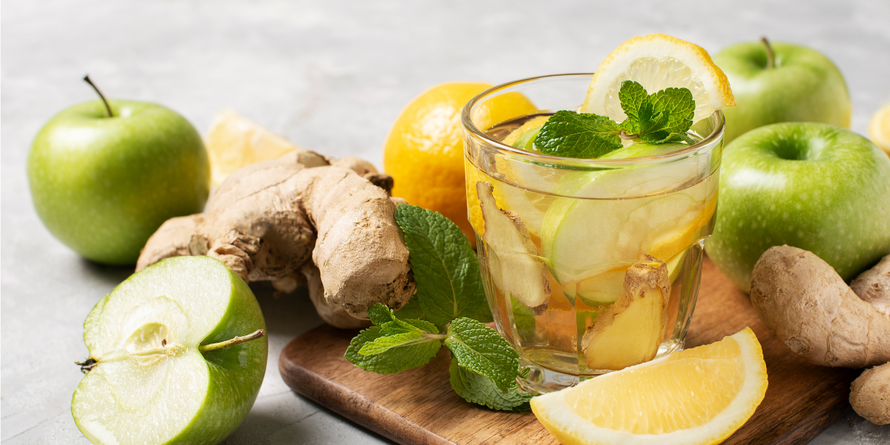
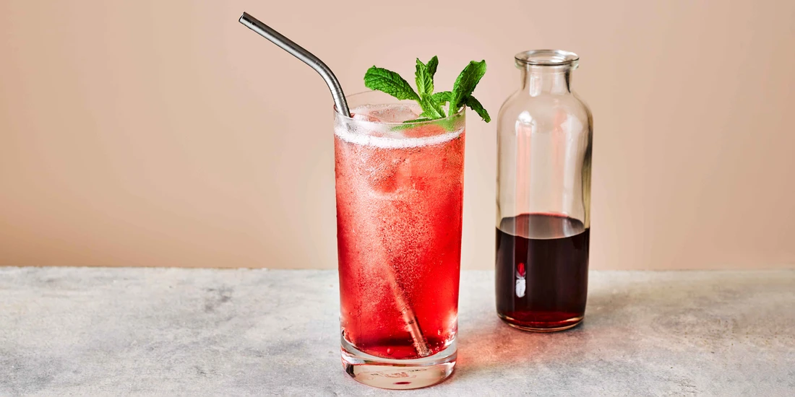
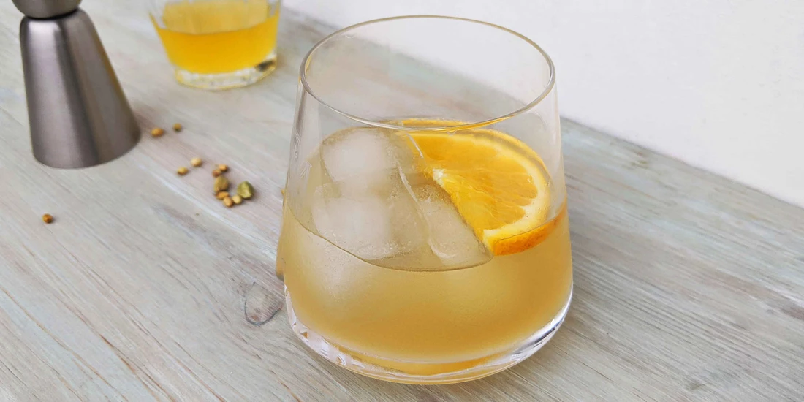
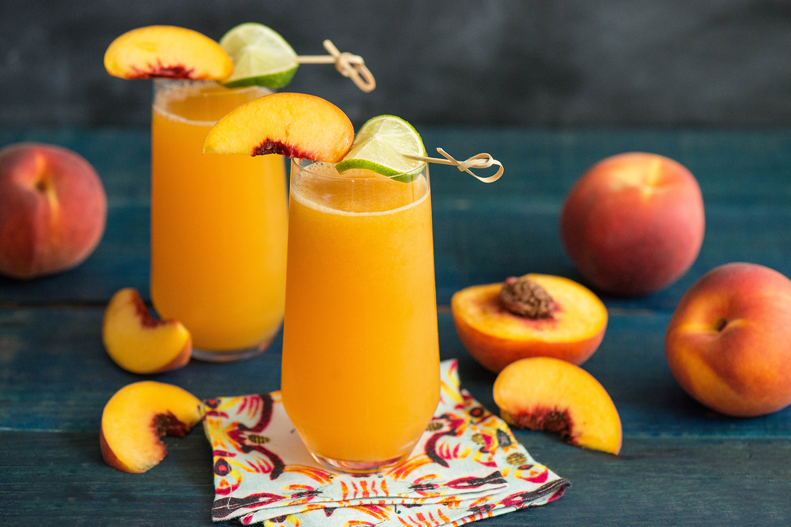

Apple-Fizz
The Apple Fizz is a refreshing and fizzy mocktail that combines the crispness of apple with the
effervescence of soda. It's a delightful and non-alcoholic beverage option that can be enjoyed by
everyone.The Apple Fizz mocktail is a versatile and enjoyable beverage that can be served at parties,
family gatherings, or simply as a refreshing drink on a hot day. Its crisp apple flavor and bubbly
nature make it a delightful choice for those seeking a non-alcoholic option.
Citrus-Blue
The Citrus Blue mocktail is a refreshing and tangy beverage that combines the bright flavors of citrus
fruits with a hint of blueberry sweetness. It's a vibrant and delightful drink that can be enjoyed by
all, whether for a special occasion or as a refreshing treatThe Citrus Blue mocktail is perfect for warm
weather occasions, brunches, or as a zesty pick-me-up anytime. Its vibrant colors and tangy flavors make
it a visually appealing and refreshing choice.

Grenadine-diabolo
The Grenadine Diabolo is a vibrant and sweet mocktail that combines the fruity flavor of grenadine syrup
with the refreshing fizz of lemonade. It's a delightful and colorful beverage option that can be enjoyed
by all ages. The Grenadine Diabolo mocktail is a great choice for parties, summer gatherings, or any
occasion where you want to serve a colorful and refreshing beverage.
Mojito-mocktail
The Mojito mocktail is a refreshing and invigorating beverage that captures the essence of the classic
Mojito cocktail without the addition of alcohol. It's a perfect choice for those who want to enjoy the
vibrant flavors of mint and lime in a non-alcoholic form. The Mojito mocktail is a popular choice for
summer gatherings, pool parties, or any occasion where you want a refreshing and uplifting drink. Its
vibrant flavors and cooling effect make it a favorite among mocktail enthusiasts.

Negroni-mocktail
The Negroni mocktail is a non-alcoholic version of the classic Negroni cocktail. It captures the bold
and bitter flavors of the original drink but without the inclusion of alcohol. It's a sophisticated and
flavorful mocktail option that can be enjoyed by those who prefer non-alcoholic beverages. The Negroni
mocktail can be adjusted according to personal preference. If you prefer a stronger bitter taste, you
can increase the amount of alcohol-free Campari alternative. Similarly, if you prefer a sweeter version,
you can add a dash of simple syrup or a few drops of non-alcoholic sweetener.
Non-Alcoholic-Moscow-Mule
The Non-Alcoholic Moscow Mule mocktail is a refreshing and zesty beverage that captures the essence of
the classic Moscow Mule cocktail without the addition of alcohol. It's a perfect choice for those who
want to enjoy the tangy flavors of ginger and lime in a non-alcoholic form. The Non-Alcoholic Moscow
Mule mocktail is a popular choice for parties, gatherings, or any occasion where you want a zesty and
uplifting drink. Its distinct flavors and effervescence make it a delightful option for those seeking a
non-alcoholic alternative.

Peach-Belini
The Peach Bellini mocktail is a refreshing and fruity beverage that captures the essence of the classic
Peach Bellini cocktail without the inclusion of alcohol. It's a perfect choice for those who want to
enjoy a delicious and vibrant drink without the effects of alcohol.The Peach Bellini mocktail is a
versatile and elegant drink that can be enjoyed on its own or paired with a brunch or afternoon
gathering. Its vibrant color and refreshing taste make it a crowd-pleaser for all occasions.
Virgin-Bloody-Mary
The Virgin Bloody Mary mocktail is a flavorful and savory beverage that replicates the taste of the
classic Bloody Mary cocktail without the inclusion of alcohol. It's a popular choice for those who enjoy
a tangy and spicy drink without the effects of alcohol.The Virgin Bloody Mary mocktail is a versatile
option that can be enjoyed on its own or customized with various garnishes and accompaniments. It's a
popular choice for brunches, morning gatherings, or as a revitalizing pick-me-up.